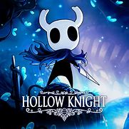
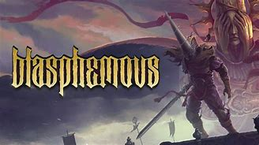
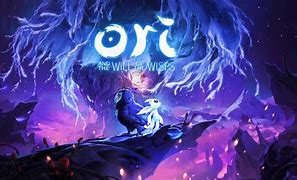
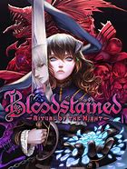
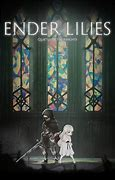

METROIDVANIAS
Hollow Knight

Hollow Kinght é um jogo de ação aventura sobre um pequeno guerreiro explorando o reino subterrâneo de Hallownest, encontrando vários inimigos desafiadores no processo. O jogo está disponível por aproximadamente R$ 74,99 (PC, PS4 e 5, Xbox One e Series, Nintendo Switch).
Blasphemous

Blasphemous é um jogo qur envolve combate desafiador e horror católico, narrando a história do Penitente tentando libertar a terra de Cvstodia.O jogo está disponível por aproximadamente R$ 92,99 (PC, PS4, PS5, Xbox One, Xbox Series, Nintendo Switch).
Ori and the Will of the Wisps

Ori and the Will of the Wisps é um jogo que narra a história de um pequeno espírito guardião chamado Ori em uma jornada mágica em busca de seu amigo perdido. O jogo está disponível por aproximadamente R$ 95,99 (PC, PS4, PS5, Xbox One, Xbox Series, Nintendo Switch).
Bloodstained: Ritual of the Night

Bloodstained: Ritual of the Night narra a história de Miriam, uma órfã amaldiçoada, em busca de salvar a si mesma e a humanidade. O jogo está disponível por aproximadamente R$ 89,90 (PC, PS4, PS5, Xbox One, Xbox Series, Nintendo Switch).
Ender Lilies: Quietus of the Knights

Ender Lilies: Quietus of the Knights narra a história de Lily, uma jovem sacerdotisa que acorda em um mundo pós apocalíptico em que uma chuva transformou todos os humanos em mortos vivos, entrando em combates, explorando e descobrindo a história do mundo em que ela se encontra. O jogo está disponível por aproximadamente R$ 57,99 (PC, PS4, PS5, Xbox One, Xbox Series, Nintendo Switch).